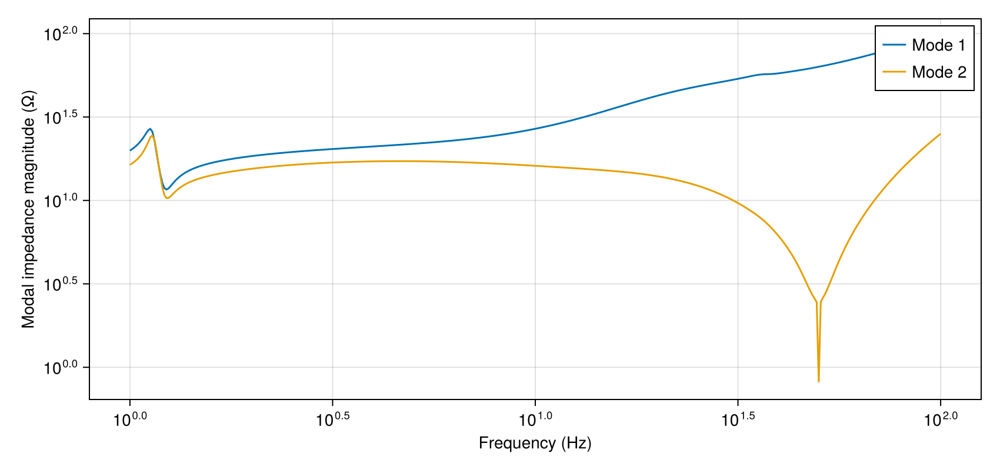
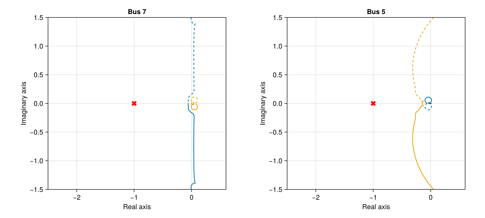

Converter and synchronous-machine interaction
A 900 MW synchronous machine and two 600 MW HVDC links feed a 380 kV grid. The machine's rotor, excitation and governor dynamics enter the impedance seen by each MMC. Modal impedance and Nyquist plots describe their interaction between 1 and 100 Hz.
using PowerImpedance
using CairoMakie
voltage = 380 / sqrt(3);Synchronous machine
The electrical model includes d/q magnetizing inductances, rotor windings and transformer leakage. The synchronousmachine constructor below sets the 1000 MVA, 380 kV base.
machine_electrical = ElectricalSM(lt = 0.065, rt = 0.0026, La_d = 1.66, La_q = 1.61,
Ll = 0.15, Ra = 0.0015);The rotor has an inertia constant of 4 s, with steam-chest, reheater and crossover time constants of 2, 5 and 1 s.
machine_mechanical = MechanicalSM(
H = 4, T_CH = 2, T_RH = 5, T_CO = 1, F_HP = 0.3, F_IP = 0.4, F_LP = 0.3);The governor adjusts mechanical power with 5 percent droop and 0.1 s and 0.2 s lags.
machine_governor = GovernorSM(R = 0.05, T_w = 0.1, T_G = 0.2);The regulator controls field excitation with a 0.05 s voltage filter, lead-lag compensation and gain 200.
machine_avr = AVRSM(v_ref = 1.01, T_R = 0.05, T_B = 1, T_C = 0.1, T_A = 0.02, K_A = 200);The machine supplies 900 MW at Bus 4.
sg1 = let model = synchronousmachine(; Vᵃᶜ_base = 380, S_base = 1000, ωn = 100π,
elec = machine_electrical, mech = machine_mechanical, gov = machine_governor,
avr = machine_avr)
b = bases(model)
component(model; powerflow = (p = 900 / b.S,
q = -100 / b.S, v = voltage * sqrt(2) / b.v_ac))
end;
sg1 = component(sg1; limits = PowerImpedance.Limits(P_min = -2000,
P_max = 2000, Q_min = -2000, Q_max = 2000));MMC controls
Each MMC has 50 mH arms, 10 mF submodules and a 60 mH reactor. The mmc constructors below set the 1000 MVA base.
electrical = ElectricalMMC(Lₐᵣₘ = 0.05, Rₐᵣₘ = 1.07, Cₐᵣₘ = 0.01, N = 400, Lᵣ = 0.06,
Rᵣ = 0.535);The measurements pass terminal voltages and currents directly to the controllers.
measurement = Measurement();The PLL sets the angle of each grid-following MMC from its terminal voltage.
sync = PLLSynchronization(pi_ctrl = PIControl(Kp = 0.28, Ki = 12.5664));The remote converters regulate DC voltage by adjusting their d-axis current references.
dc_control = OuterActiveVdcControl(pi_ctrl = PIControl(Kp = 5, Ki = 15));The receiving converters regulate active power through their d-axis current references.
power_control = OuterActivePowerControl(pi_ctrl = PIControl(Kp = 0.1, Ki = 31.4159));Reactive-power control sets the q-axis current reference of each remote converter.
reactive_control = OuterReactiveQControl(pi_ctrl = PIControl(Kp = 0.1, Ki = 31.4159));The converter at Bus 7 regulates AC voltage with an integral gain of 100.
voltage_control = OuterReactiveVacControl(pi_ctrl = PIControl(Kp = 0, Ki = 100));AC voltage support at Bus 5 uses gain 20 and a 100 rad/s measurement filter.
voltage_support = VoltageSupportLag(K = 20, ωc = 100);Reactive-power control at Bus 5 includes the voltage-support contribution in its reference.
support_control = OuterReactiveQControl(pi_ctrl = PIControl(Kp = 0.1, Ki = 31.4159),
support = voltage_support);The inner AC current loop follows the d/q references through the arm and reactor inductances.
current_control = InnerCurrentPIControl(
pi_ctrl = PIControl(Kp = 0.7691, Ki = 522.7654), activate_ω_c_multiplication = false);Circulating current suppression controls the second-harmonic current between the arms.
internal_control = ΣdqzControlTEC(ccsc = CirculatingCurrentSuppressionControl(PIControl(
Kp = 0.067, Ki = 30.8425)));Modulation converts the commanded arm voltages to submodule insertion indices.
modulation = UncompensatedModulation();
remote_control = ΔdqControlGFL(
outer_active = dc_control, outer_reactive = reactive_control, occ = current_control);
bus7_control = ΔdqControlGFL(
outer_active = power_control, outer_reactive = voltage_control, occ = current_control);
bus5_control = ΔdqControlGFL(
outer_active = power_control, outer_reactive = support_control, occ = current_control);
remote_limits = PowerImpedance.Limits(P_min = -1.5, P_max = 1.5, Q_min = -0.5, Q_max = 0.5);
receiving_limits = PowerImpedance.Limits(P_min = -1, P_max = 1, Q_min = -1, Q_max = 1);Converter c1 regulates the first link's DC voltage at its remote AC grid.
c1 = let model = mmc(; vDC_base = 800, vACbase_LL_RMS = 380, Sbase = 1000,
elec = electrical, meas = measurement, sync = sync, delta_control = remote_control,
sigma_control = internal_control, modulation = modulation, limits = remote_limits)
b = bases(model)
component(model;
delta_control = (outer_active = (v_dc_ref = 800 / b.v_dc,),
outer_reactive = (q_ref = 0.0,)),
powerflow = (; p_ac = -600 / b.S,
v_ac = (voltage * sqrt(2)) / b.v_ac))
end;Converter c2 injects 600 MW at Bus 7 while regulating AC voltage.
c2 = let model = mmc(; vDC_base = 800, vACbase_LL_RMS = 380, Sbase = 1000,
elec = electrical, meas = measurement, sync = sync, delta_control = bus7_control,
sigma_control = internal_control, modulation = modulation,
limits = receiving_limits)
b = bases(model)
component(model;
delta_control = (outer_active = (p_ref = 600 / b.S,),
outer_reactive = (v_ac_ref = (voltage * sqrt(2)) / b.v_ac,)),
powerflow = (; v_dc = 800 / b.v_dc,
q_ac = 100 / b.S))
end;Converter c3 regulates the second link's DC voltage at its remote AC grid.
c3 = let model = mmc(; vDC_base = 800, vACbase_LL_RMS = 380, Sbase = 1000,
elec = electrical, meas = measurement, sync = sync, delta_control = remote_control,
sigma_control = internal_control, modulation = modulation, limits = remote_limits)
b = bases(model)
component(model;
delta_control = (outer_active = (v_dc_ref = 800 / b.v_dc,),
outer_reactive = (q_ref = 0.0,)),
powerflow = (; p_ac = -600 / b.S,
v_ac = (voltage * sqrt(2)) / b.v_ac))
end;Converter c4 injects 600 MW and supports the AC voltage at Bus 5.
c4 = let model = mmc(; vDC_base = 800, vACbase_LL_RMS = 380, Sbase = 1000,
elec = electrical, meas = measurement, sync = sync, delta_control = bus5_control,
sigma_control = internal_control, modulation = modulation,
limits = receiving_limits)
b = bases(model)
component(model;
delta_control = (outer_active = (p_ref = 600 / b.S,),
outer_reactive = (q_ref = 100 / b.S,
support = (v_ac_ref = (voltage * sqrt(2)) / b.v_ac,))),
powerflow = (; v_dc = 800 / b.v_dc))
end;Transmission network
The overhead conductors have 10 m phase spacing and 30 m height over 100 ohm metre earth.
conductors = Conductors(organization = :flat, nᵇ = 3, nˢᵇ = 1, Rᵈᶜ = 0.063, rᶜ = 0.015,
yᵇᶜ = 30, Δyᵇᶜ = 0, Δxᵇᶜ = 10, Δ̃xᵇᶜ = 0, dˢᵇ = 0, dˢᵃᵍ = 10);
groundwires = Groundwires(
nᵍ = 2, Rᵍᵈᶜ = 0.92, rᵍ = 0.0062, Δxᵍ = 6.5, Δyᵍ = 7.5, dᵍˢᵃᵍ = 10);Line tl89 connects buses 9 and 8 over 50 km.
tl89 = overhead_line(length = 50e3, conductors = conductors,
groundwires = groundwires, earth_parameters = (1, 1, 100));Line tl75 connects buses 5 and 7 over 50 km.
tl75 = overhead_line(length = 50e3, conductors = conductors,
groundwires = groundwires, earth_parameters = (1, 1, 100));Line tl96 connects buses 6 and 9 over 90 km.
tl96 = overhead_line(length = 90e3, conductors = conductors,
groundwires = groundwires, earth_parameters = (1, 1, 100));Line tl54 connects buses 4 and 5 over 120 km.
tl54 = overhead_line(length = 120e3, conductors = conductors,
groundwires = groundwires, earth_parameters = (1, 1, 100));Line tl64 connects buses 4 and 6 over 70 km.
tl64 = overhead_line(length = 70e3, conductors = conductors,
groundwires = groundwires, earth_parameters = (1, 1, 100));Lines tl1 and tl2 connect the remote MMCs to their AC sources over 50 km each.
tl1 = overhead_line(length = 50e3, conductors = conductors,
groundwires = groundwires, earth_parameters = (1, 1, 100));
tl2 = overhead_line(length = 50e3, conductors = conductors,
groundwires = groundwires, earth_parameters = (1, 1, 100));The 30 km cable between buses 7 and 8 has copper cores, metallic screens and magnetic armour.
tl78 = cable(length = 30e3, positions = [(-0.5, 1.9), (0, 1.9), (0.5, 1.9)],
C1 = Conductor(rₒ = 24.25e-3, ρ = 1.72e-8), I1 = Insulator(rᵢ = 24.25e-3,
rₒ = 41.75e-3, ϵᵣ = 2.3),
C2 = Conductor(rᵢ = 41.75e-3, rₒ = 46.25e-3, ρ = 22e-8), I2 = Insulator(
rᵢ = 46.25e-3, rₒ = 49.75e-3, ϵᵣ = 2.3),
C3 = Conductor(rᵢ = 49.75e-3, rₒ = 60.55e-3, ρ = 18e-8, μᵣ = 10), I3 = Insulator(
rᵢ = 60.55e-3, rₒ = 65.75e-3, ϵᵣ = 2.3),
earth_parameters = (1, 1, 100));The first DC link uses 100 km of cable with two cores buried 1 m deep.
dc_line = cable(length = 100e3, positions = [(-0.5, 1), (0.5, 1)],
C1 = Conductor(rₒ = 24.25e-3, ρ = 1.72e-8), I1 = Insulator(rᵢ = 24.25e-3,
rₒ = 41.75e-3, ϵᵣ = 2.3),
C2 = Conductor(rᵢ = 41.75e-3, rₒ = 46.25e-3, ρ = 22e-8), I2 = Insulator(
rᵢ = 46.25e-3, rₒ = 49.75e-3, ϵᵣ = 2.3),
C3 = Conductor(rᵢ = 49.75e-3, rₒ = 60.55e-3, ρ = 18e-8, μᵣ = 10), I3 = Insulator(
rᵢ = 60.55e-3, rₒ = 65.75e-3, ϵᵣ = 2.3));The second DC link uses 50 km of the same cable construction.
dc_line_2 = cable(length = 50e3, positions = [(-0.5, 1), (0.5, 1)],
C1 = Conductor(rₒ = 24.25e-3, ρ = 1.72e-8), I1 = Insulator(rᵢ = 24.25e-3,
rₒ = 41.75e-3, ϵᵣ = 2.3),
C2 = Conductor(rᵢ = 41.75e-3, rₒ = 46.25e-3, ρ = 22e-8), I2 = Insulator(
rᵢ = 46.25e-3, rₒ = 49.75e-3, ϵᵣ = 2.3),
C3 = Conductor(rᵢ = 49.75e-3, rₒ = 60.55e-3, ρ = 18e-8, μᵣ = 10), I3 = Insulator(
rᵢ = 60.55e-3, rₒ = 65.75e-3, ϵᵣ = 2.3));The transformer connects the external grid to Bus 9 through 26.9 mH total leakage inductance. Its 7 nF turn-to-turn and 12 nF stray capacitances contribute at higher frequencies.
t3 = transformer(n = 1, Lₚ = 0.0269/2, Lₛ = 0.0269/2, Rₚ = 0,
Rₛ = 0, Cₜ = 7e-9, Cₛ = 12e-9, conductors = 3);Ideal AC sources supply the transformer and the remote ends of both HVDC links.
grid_limits = PowerImpedance.Limits(P_min = -2000, P_max = 2000, Q_min = -1000,
Q_max = 1000);
g3 = ac_source(v = voltage * sqrt(2));
g4 = ac_source(v = voltage * sqrt(2), p = 600);
g5 = ac_source(v = voltage * sqrt(2), p = 600);Loads at buses 5, 6 and 8 each place 192.5 ohm in parallel with 4.6 H.
l5 = impedance(z = s -> 192.5 * 4.6s / (192.5 + 4.6s), conductors = 3);
l6 = impedance(z = s -> 192.5 * 4.6s / (192.5 + 4.6s), conductors = 3);
l8 = impedance(z = s -> 192.5 * 4.6s / (192.5 + 4.6s), conductors = 3);
elements = (; sg1, c1, c2, c3, c4, tl78, tl89, tl75, tl96, tl54, tl64, tl1, tl2,
dc_line, dc_line_2, t3, g3, g4, g5, l5, l6, l8);The machine at Bus 4 feeds the two AC paths to the MMCs at buses 5 and 7. The DC cables join each receiving MMC to its remote converter independently.
connections = (
NetworkBuilder.Bus(:Bus4;
ports = ((:sg1, :ac), (:tl64, :side1), (:tl54, :side1)), domain = ACDQ),
NetworkBuilder.Bus(:Bus6;
ports = ((:tl64, :side2), (:l6, :side1), (:tl96, :side1)), domain = ACDQ),
NetworkBuilder.Bus(:Bus5;
ports = ((:tl54, :side2), (:l5, :side1), (:tl75, :side1), (:c4, :ac)),
domain = ACDQ),
NetworkBuilder.Bus(:Bus9;
ports = ((:tl96, :side2), (:tl89, :side1), (:t3, :side2)), domain = ACDQ),
NetworkBuilder.Bus(:Bus7;
ports = ((:tl75, :side2), (:tl78, :side1), (:c2, :ac)), domain = ACDQ),
NetworkBuilder.Bus(:Bus8;
ports = ((:tl78, :side2), (:tl89, :side2), (:l8, :side1)), domain = ACDQ),
NetworkBuilder.Bus(:gnd;
ports = ((:l5, :side2), (:l6, :side2), (:l8, :side2)), domain = ACDQ),
NetworkBuilder.Bus(:Bus3; ports = ((:g3, :ac), (:t3, :side1)), domain = ACDQ),
NetworkBuilder.Bus(:Remote1; ports = ((:c1, :ac), (:tl1, :side2)), domain = ACDQ),
NetworkBuilder.Bus(:Source1; ports = ((:g4, :ac), (:tl1, :side1)), domain = ACDQ),
NetworkBuilder.Bus(:Remote2; ports = ((:c3, :ac), (:tl2, :side2)), domain = ACDQ),
NetworkBuilder.Bus(:Source2; ports = ((:g5, :ac), (:tl2, :side1)), domain = ACDQ),
NetworkBuilder.Bus(:DC1; ports = ((:c1, :dc), (:dc_line, :side1))),
NetworkBuilder.Bus(:DC2; ports = ((:c2, :dc), (:dc_line, :side2))),
NetworkBuilder.Bus(:DC3; ports = ((:c3, :dc), (:dc_line_2, :side1))),
NetworkBuilder.Bus(:DC4; ports = ((:c4, :dc), (:dc_line_2, :side2)))
);Impedance and modal response
Power flow supplies the machine and converter operating points for linearization.
network = NetworkBuilder.define(elements, connections;
options = (; voltageBase = voltage,
power_flow = (; is_bounded = (; bus_voltage = true),
optimizer = (; hessian_approximation = "limited-memory"))));
power_flow = compute(PowerFlowProblem(network), ACDCPowerFlow());
linearized = compute(LinearizationProblem(network, power_flow), AdmittanceLinearization());
converter_impedance = compute(
PowerImpedanceProblem(linearized.network_model;
nodes = [:Bus7d, :Bus7q], eliminated_elements = [:tl78, :tl75], frequency_range = (
1, 100, 400)),
NodalImpedance());
grid_impedance = compute(
PowerImpedanceProblem(linearized.network_model;
nodes = [:Bus7d, :Bus7q], eliminated_elements = [:c2], frequency_range = (
1, 100, 400)),
NodalImpedance());
closed_impedance = compute(
PowerImpedanceProblem(linearized.network_model;
nodes = [:Bus7d, :Bus7q], frequency_range = (1, 100, 400)),
NodalImpedance());
modes = compute(StabilityProblem(closed_impedance), EigenvalueAnalysis(fmin = 0.01,
fmax = 1000));┌ Warning: Transformer has no open-circuit voltage ratings; voltage limits will use inferred bus voltage levels.
└ @ PowerImpedance src/Network/Components/transformer/transformer.jl:351
[ Info: LOCALLY_SOLVED
[ Info: Power flow converged successfully.
[ Info: Terminal operating values: Dict{Symbol, NamedTuple}(:c4 => (ac = ACPortValues(310.11427966104753, 0.016699063957847895, -600.0, -109.95402314921577), dc = DCPortValues(799.2978933929736, 602.7599223064049)), :c3 => (ac = ACPortValues(305.0706490001374, -0.09378461537852974, 606.1050966450451, 1.1201419404426858e-35), dc = DCPortValues(800.0, -603.289389138899)), :g5 => (ac = ACPortValues(310.2687007525359, -3.76525534247764e-39, -614.6696130189683, -38.93064927747772),), :g3 => (ac = ACPortValues(310.2687007525359, 1.0834579645164507e-37, -119.09548419738107, -78.42314238089487),), :sg1 => (ac = ACPortValues(308.9633614369963, 0.11284827472832169, -900.0, -55.05463778397682),), :g4 => (ac = ACPortValues(310.2687007525359, 2.0956860223253594e-37, -615.5347080381567, -39.094964049897214),), :c1 => (ac = ACPortValues(305.06069037660893, -0.09391788636858413, 606.9460591678313, -5.624581715434349e-34), dc = DCPortValues(800.0, -604.1223483803722)), :c2 => (ac = ACPortValues(310.2687007525359, 0.0003952774142535334, -600.0, 230.2671120042169), dc = DCPortValues(798.5938479943892, 603.0604885655936)))
[ Info: Starting to solve for steady-state solution
[ Info: SynchronousMachine steady-state solution found!
[ Info: Starting to solve for steady-state solution
[ Info: MMC steady-state solution found!
[ Info: Starting to solve for steady-state solution
[ Info: MMC steady-state solution found!
[ Info: Starting to solve for steady-state solution
[ Info: MMC steady-state solution found!
[ Info: Starting to solve for steady-state solution
[ Info: MMC steady-state solution found!The modal impedances peak near 1.13 Hz at about 27 and 25 ohms. The machine's rotor and excitation dynamics couple to the MMC controls through the AC lines and cable. The second mode has a broader peak near 4.6 Hz at 17 ohms.
modal_plot = Figure(size = (850, 400));
axis = Axis(modal_plot[1, 1]; xlabel = "Frequency (Hz)",
ylabel = "Modal impedance magnitude (Ω)", xscale = log10, yscale = log10);
for index in 1:2
lines!(axis, real.(closed_impedance.frequencies) ./ (2π),
abs.(modes.output.eigenvalues[:, index]); label = "Mode $index");
end
axislegend(axis);
modal_plot
At Bus 5, the second MMC includes filtered AC voltage support in its reactive-power reference.
converter_impedance5 = compute(
PowerImpedanceProblem(linearized.network_model;
nodes = [:Bus5d, :Bus5q], eliminated_elements = [:tl75, :tl54, :l5],
frequency_range = (
1, 100, 400)),
NodalImpedance());
grid_impedance5 = compute(
PowerImpedanceProblem(linearized.network_model;
nodes = [:Bus5d, :Bus5q], eliminated_elements = [:c4], frequency_range = (
1, 100, 400)),
NodalImpedance());Each loop gain is the grid impedance multiplied by the converter admittance at that terminal. The eigenvalue trajectories have zero encirclements of -1 at both terminals. Their negative-real-axis crossings reach about -0.059 at Bus 7 and -0.144 at Bus 5.
nyquist = Figure(size = (1000, 450));
for (column, grid, converter, title) in ((1, grid_impedance, converter_impedance, "Bus 7"),
(2, grid_impedance5, converter_impedance5, "Bus 5"))
ratio = similar(grid.response);
for index in axes(ratio, 3)
ratio[:, :, index] = grid.response[:, :, index] / converter.response[:, :, index];
end
loop_gain = FrequencyResponseResult(LoopGain(), :loopgain, ratio, grid.frequencies,
grid.nodes, linearized.network_model, (;));
stability = compute(StabilityProblem(loop_gain), GeneralizedNyquist());
nyquist_axis = Axis(nyquist[1, column]; title, xlabel = "Real axis",
ylabel = "Imaginary axis", aspect = DataAspect());
for (index, locus) in enumerate(eachcol(stability.output.eigenloci))
lines!(nyquist_axis, real.(locus), imag.(locus); color = Cycled(index));
lines!(nyquist_axis, real.(locus), -imag.(locus);
color = Cycled(index), linestyle = :dash);
end
scatter!(nyquist_axis, [-1.0], [0.0]; color = :red, marker = :xcross, markersize = 15);
xlims!(nyquist_axis, -2.5, 0.6);
ylims!(nyquist_axis, -1.5, 1.5);
end
nyquist
Back to Examples